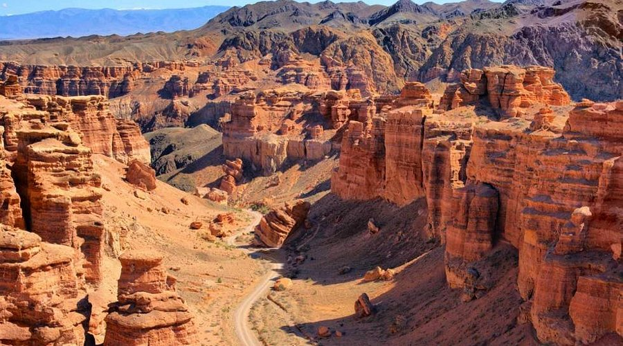

Біздің Тур Бағыттар
Біз сізге Алматының табиғи сұлулығын ашатын ерекше бағыттарды ұсынамыз.

Шарын Шатқалы
Шарын шатқалы — Қазақстанның Гранд-Каньоны. Ол терең жартастармен және таңғажайып табиғи ландшафтарымен ерекшеленеді.
Көбірек білу
Қайыңды Көлі
Қайыңды көлі — су астында қалған орманымен танымал, ерекше табиғи феномен. Тыныштық пен сұлулықтың мекені.
Көбірек білуШымбұлақ
Шымбұлақ — Алматының ең танымал тау-шаңғы курорты. Қыста да, жазда да демалу үшін мінсіз орын.
Көбірек білуАртықшылықтар:
- Табиғатпен жақын болу
- Жаңа әсерлер
- Фотосессияға таптырмас орындар
Не керек:
- Ыңғайлы аяқ киім
- Күннен қорғайтын көзілдірік
- Көтеріңкі көңіл-күй